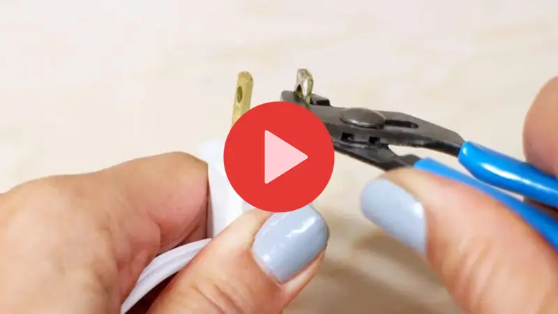

1 truque simples para reduzir sua conta de luz em 90%

Descubra por que as companhias de energia estão assustadas com essa tecnologia inovadora que reduz sua conta de luz em até 90%.
Não é segredo que o preço da eletricidade aumenta constantemente a cada ano, mas graças a essa nova tecnologia, os consumidores podem economizar centenas ou até milhares de reais anualmente em suas contas de luz.
Assista o vídeo chocante aqui!comentários
@MaraEconomiza · 12 minutos atrás
Vim pelo anúncio e fiquei intrigada. Alguém já assistiu e pode contar se é rápido?
@LeoInstalador · 28 minutos atrás
Meu pai trabalhou 30 anos nessa área e sempre comentou algo parecido. Vale a pena ver o vídeo.

@PriCasaNova · 45 minutos atrás
Nossa, nunca parei pra pensar nisso. O vídeo explica bem devagar, entendi tudo.
@RafaLeitura · 1 hora atrás
Achei que fosse só mais uma matéria, mas o conteúdo é bem sério. Compartilhei no grupo da família.
@DonaNilza · 1 hora atrás
Vou mostrar pra minha filha. Ela reclama da conta de luz todo mês e não sabe o porquê.
@TiagoDicas · 2 horas atrás
Não custa nada assistir e se informar. Sempre tem detalhe que a gente não conhece.

@CarolMaeDe2 · 2 horas atrás
Gente, o vídeo é curto e direto. Acabei assistindo duas vezes pra entender direitinho.
@EngPaulo · 3 horas atrás
Parece mentira à primeira vista, mas quando explica a lógica faz todo sentido.
@FernandaLuz · 3 horas atrás
Meu marido achou que era exagero, mas depois que assistiu mudou de ideia na hora.
@JulioContas · 4 horas atrás
Esse tipo de informação deveria ser mais divulgado. Todo mundo paga energia e ninguém sabe disso.
@BiaSustentavel · 5 horas atrás
Assisti e realmente abriu meus olhos. Agora fico de olho no relógio quando ligo os aparelhos.
@MarinaCuriosa · 6 horas atrás
Quanto tempo dura o vídeo? Quero assistir com calma depois do almoço.